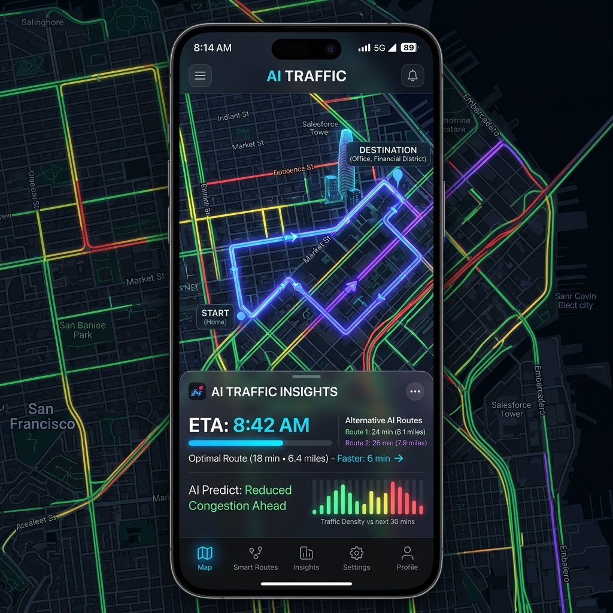
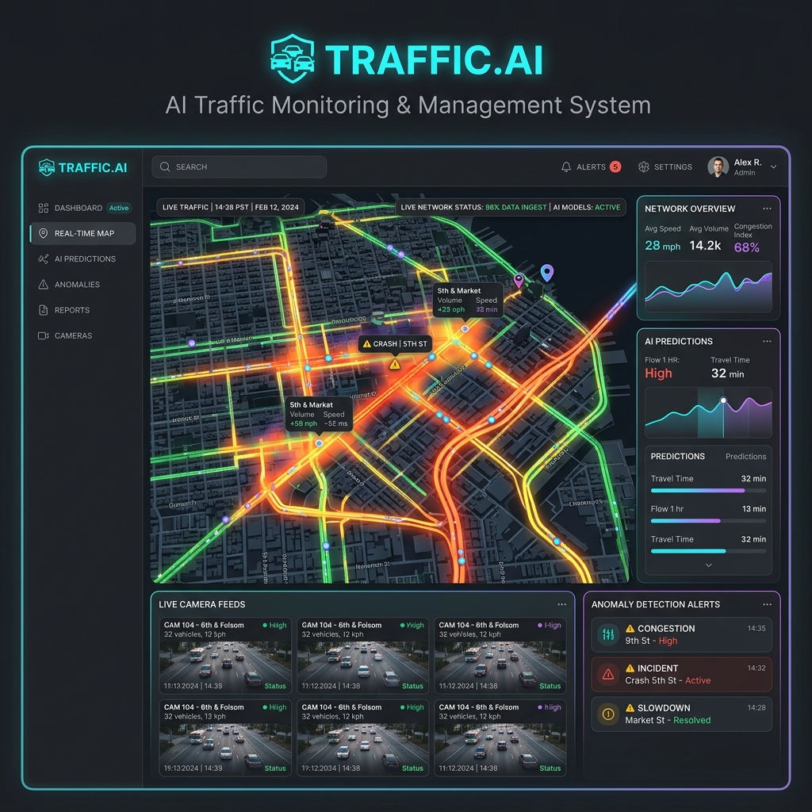

Қалалық ортадағы көлік ағындарын бақылау мен болжауға арналған AI-қосымша әзірлеу
Сулейменов АЛИШЕР
Кусаинова Айнур
1. Тақырыптың өзектілігі
Мәселе: Урбанизацияның жылдам өсуі қалалардағы көлік кептелісін күшейтеді. Дәстүрлі жүйелер пост-фактум жұмыс істейді.
Шешім
Machine Learning алгоритмдері арқылы кептелістерді 1-2 сағат бұрын болжау.
- Smart City дамуы: Цифрландыру
- Экология: CO2 азайту
- Экономика: Логистиканы оңтайландыру
2. Жұмыс мақсаты
LSTM нейрондық желілік архитектурасы негізінде қалалық трафикті нақты уақыт режимінде мониторингтеуге және көлік кептелісін алдын ала болжауға мүмкіндік беретін кешенді интеллектуалды AI-жүйесін әзірлеу және оны мобильді/веб платформалар арқылы интеграциялау.
3. Зерттеу міндеттері
- Пәндік аймаққа және қазіргі навигациялық жүйелерге талдау жасау.
- Деректер базасы мен серверлік архитектураны (FastAPI, PostGIS) жобалау.
- Көлік ағындарын болжайтын машиналық оқыту (LSTM) алгоритмдерін құру.
- Мобильді қосымша (Flutter) мен веб-бақылау тақтасын (Vue.js) әзірлеу.
- Жүйені тестілеуден өткізу және тиімділігін бағалау.
4. Зерттеу нысаны мен пәні
Зерттеу нысаны
Қалалық ортадағы көлік ағындары және олардың инфрақұрылымы (жол қозғалысы динамикасы).
Зерттеу пәні
Трафикті талдауға, модельдеуге және болжауға арналған жасанды интеллект алгоритмдері (ML).
5. Технологиялар Стегі
Backend & Machine Learning
Frontend & Mobile
6. Аналогтарды Талдау
| Аналог | Артықшылығы | Кемшілігі |
|---|---|---|
| Яндекс.Карты / 2ГИС | Ауқымды қамту, қолдануға ыңғайлы. | Әкімшіліктер үшін жабық жүйе (Қалалық инфрақұрылымға енгізу мүмкін емес). |
| Sergek Traffic | Камералар арқылы нақты уақыттағы мониторинг. | Алдын ала болжау жүйесі толыққанды іске аспаған. Ашық API жоқ. |
| Біздің жоба (AI Traffic) | ИИ көмегімен алдын-ала 2 сағатқа болжау. | Сыртқы датчиктер мен деректерге (IoT) тәуелділік деңгейі. |
7. Есептің қойылымы
Математикалық формализация
Бұл есеп көп өлшемді уақытша қатарларды (multivariate time-series) болжау класына жатады. Мақсат — тарихи трафик деректерінің жиынтығын (Traffichist) және сыртқы динамикалық факторларды (ауа райының өзгеруі, жол оқиғалары, мерекелік күндер) ескере отырып, T уақытынан кейінгі t қадамындағы көше сегменттеріндегі кептеліс деңгейінің (Ypred) ықтималдық мәнін есептеу.
Толығырақ мәлімет
Метрикалар мен шектеулерді көру үшін жоғарыдағы блоктарды басыңыз.
8. Жүйенің Архитектурасы
(Mobile App)
(Web Admin)
Интерактивті Архитектура
Әрбір модульдің қызметімен танысу үшін, жоғарыдағы диаграммадағы кез-келген блокты басыңыз.
9. Алгоритм жұмысы
- Деректерді өңдеу: Кеңістік-уақыттық деректерді PostGIS арқылы тазарту және қалыпқа келтіру.
- Модельді оқыту: Тарихи деректер негізінде LSTM (Long Short-Term Memory) архитектурасын Python/PyTorch арқылы оқыту.
- Нақты уақыттық өңдеу: FastAPI және WebSocket арқылы пайдаланушы мен сервер арасында үздіксіз деректер(traffic stream) алмасу.
- Маршрутты оңтайландыру: A* немесе Dijkstra алгоритміне ИИ болжаған салмақтарды (traffic delay) қосып ең тиімді жолды есептеу.
10. Жүйе Интерфейсі

FLUTTER MOBILE CLIENT

Жүйелік компоненттер:
- Glassmorphism дизайны мен қараңғы режим қолдауы.
- Интерактивті карта мен нақты уақыттағы графиктік талдау.
- Жедел хабарландырулар (Push-notifications).
11. Жобаның негізгі нәтижелері
| Бағыт | Қол жеткізілген нәтиже |
|---|---|
| Machine Learning | Трафикті болжаудың нейрондық моделі (LSTM) құрылды. Жүйе 87% дәлдікке қол жеткізді. |
| Mobile & Web App | Кросс-платформалық мобильді клиент және қала операторларына арналған веб-панель толықтай іске қосылды. |
| Cloud База | Үздіксіз деректерді өңдеуге арналған толыққанды архитектура (FastAPI + PostgreSQL) құрылды. |
12. Тестілеу және бағалау
Өнімділік (Performance)
- API жауап беру уақыты: < 120 мс.
- Бірге жұмыс істейтін 10,000 WebSocket қосылымы сынақтан өтті (Load Testing).
AI Метрикалары
- Болжау дәлдігі: 87% Accuracy
- Орташа жол жүру уақытын үнемдеу: -15%
13. Тәжірибелік маңызы
Қала әкімшілігі
Жол инфрақұрылымын жоспарлау және бағдаршамдар циклдерін тиімді басқару құралы.
Тұрғындар үшін
Күнделікті қатынау уақытын үнемдеу, стрессті азайту жылдамдық пен жайлылықты арттыру.
14. Қорытынды
Дипломдық жұмыстың мақсатына толық қол
жеткізілді.
Қалалық ортадағы трафикті бақылау мен болжауға арналған заманауи AI-қосымша әзірленіп,
тестілеуден сәтті өтті. Заманауи стек (Flutter, FastAPI, PyTorch) қолданылуы жүйенің жоғары
өнімділігі мен болашақта масштабталуын қамтамасыз етеді.
15. Даму перспективалары
- Computer Vision интеграциясы: Көше камераларынан нақты уақыттағы бейнелерді талдап, апаттарды автоматты түрде тіркеу.
- V2X (Vehicle-to-Everything): Ақылды көліктермен (Smart Cars) тікелей байланыс орнату.
- IoT қолдауы: Ақылды бағдаршамдарды трафик көлеміне қарай тікелей басқару жүйесі.
- Масштабтау: Жүйені Қазақстанның басқа мегаполистерінде (Алматы, Шымкент) іске қосу.
Назарларыңызға рақмет!
Сұрақтарыңыз болса, жауап беруге дайынмын.
Осы QR кодты смартфоныңызбен сканерлеп, презентацияны онлайн көріңіз және жобаның бастапқы кодымен (GitHub) танысыңыз.
Сулейменов Алишер
В057-6104-22-05